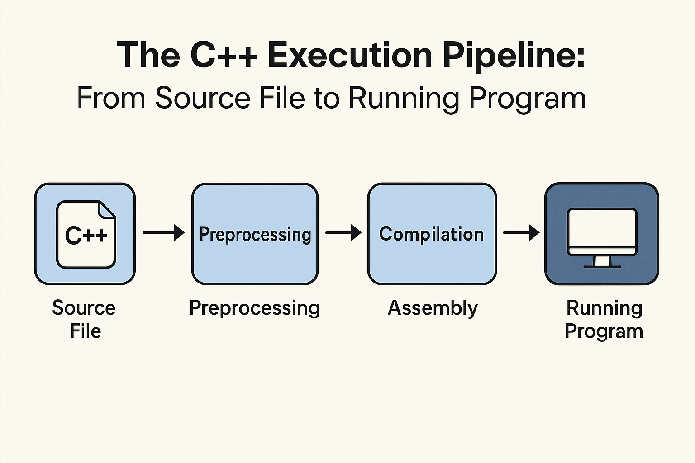

How C++ Works: From Source to Executable (High-Level)
C++ is a compiled language, which means your code does not execute directly. Instead, it passes through a carefully designed multi-stage pipeline that transforms human-readable source files into machine-executable binaries.
Understanding this pipeline is essential for debugging compiler and linker errors, optimizing performance, and working effectively on large, real-world C++ systems. What often feels like “compiler magic” becomes predictable once you understand how each stage works.
The Big Picture
At a high level, a C++ program moves through three major stages before it can run:
- Preprocessing – Textual preparation
- Compilation – Translation into object code
- Linking – Combining everything into an executable
Each stage has a clear responsibility, and most build errors can be traced back to one of these steps.
1. Preprocessing
The preprocessing stage runs before actual compilation begins. The preprocessor performs pure text manipulation and does not understand C++ syntax, types, or semantics.
- Expands
#includedirectives by copying header contents - Expands macros defined using
#define - Handles conditional compilation (
#ifdef,#ifndef) - Removes comments
#define square(x) ((x) * (x))
#define PI 3.14
double area = PI * square(10);
After preprocessing, the compiler never sees the macro name PI.
It only sees the expanded result.
#define PI is —
it only receives double area = 3.14 * ((10) * (10));.
This explains why macros can be dangerous: they bypass type checking and scope rules entirely.
2. Compilation
During compilation, the preprocessed source code is translated into
object files (.o on Linux/macOS,
.obj on Windows).
Each source file is compiled independently.
- Syntax validation and grammar checks
- Type checking and semantic analysis
- Generation of machine instructions
- Creation of symbol tables
The result of this stage is not a runnable program. Object files may still contain unresolved references to functions or variables defined elsewhere.
This design allows C++ projects to scale: only modified source files need recompilation, saving significant build time in large codebases.
3. Linking
The final stage is linking. The linker’s job is to combine all object files and required libraries into a single executable or shared library.
- Resolves function and variable references across files
- Combines multiple translation units
- Links standard and third-party libraries
- Produces the final binary
If a function is declared but never defined, the linker will fail even though compilation succeeded.
The Complete Flow
The entire build pipeline can be summarized as follows:
hello.cpp
↓ Preprocessor
hello.ii
↓ Compiler
hello.o
↓ Linker + Libraries
hello.exe / a.out
Each arrow represents a transformation step that can be inspected
using compiler flags such as -E, -S,
or -c.
Why This Matters
Understanding this pipeline pays off quickly when working with real C++ projects.
- Explains why headers and source files serve different roles
- Makes compiler and linker errors far less mysterious
- Helps you structure large, scalable C++ codebases
- Improves debugging, build performance, and dependency management
Conclusion
C++ programs do not magically run. They are carefully transformed step by step through preprocessing, compilation, and linking.
Once you understand this process, build errors stop being frustrating roadblocks and start becoming solvable engineering problems — a crucial shift for anyone moving from small programs to production-scale C++ systems.